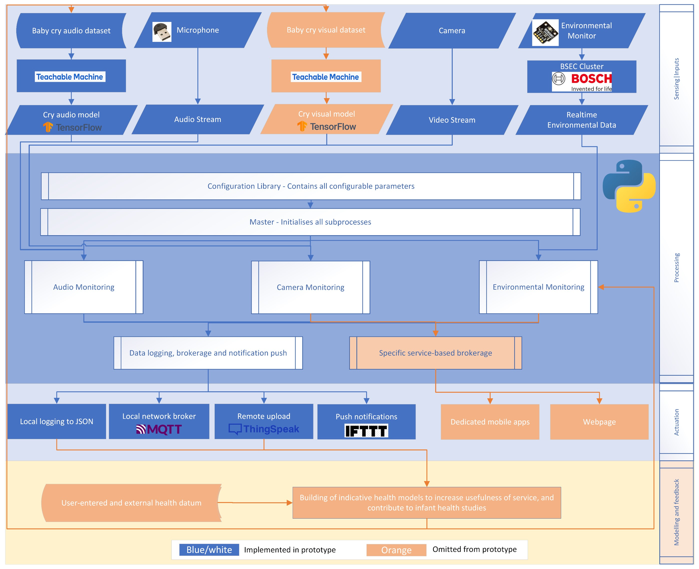
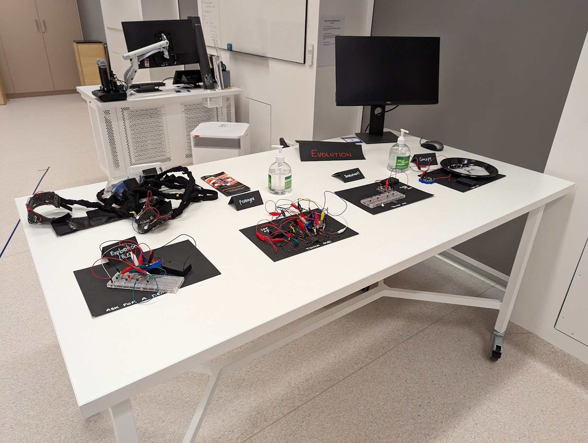

Master of Applied Cybernetics - CECS8001 – Build Journey
David Auricht - U7446851
Rolling hills to suit the rolling summary.
Rolling Summary
Check Point 1 – April 2022
As of the first “submission checkpoint” I would consider Skill 1 to be well on track in terms of progression, with coding ability (and confidence therein) growing thanks to the course and side investigations. Skill 2 is still in its earliest stages, but finally getting under way – As stated in “Fortnight 3: Modelling, Simulation & Feedback Loops”, this is something I will be seeking to put time into over the mid-semester holiday break. Skill 3 has not been explored in depth at this point, btu will become increasingly relevant as the build project progresses; I expect to make significant further comment here by the second check point.
My thinking and attitude to building and coding tasks have changed notably through the first quarter of the degree. My confidence in my ability has grown notably and, where challenges have arisen (such as the Tic Tac Toe algorithm), I have found suitable methods to make progress rather than throwing my hands in the air and calling it a day! Extending from this is a new tenancy to try and find iterative approaches to tasks, and an enjoyment in learning via assisting others where they are needing help.
Taking a sky-high view of work so far, I am happy with my current trajectory and look forward to extending it. Weeks 3 and 4 built upon skills regained in weeks 1 and 2, and the third fortnight allowed early exploration of “building”.
Check Point 2 – June 2022
As of the second submission checkpoint, Skill 1, coding, is reaching a point at which I am considering it of lesser need of focus heading into semester two. Skill 2, making, has conversely received far less attention than anticipated and will be of key focus in future works. Skill 3 has similarly received little attention, although to some extent this is inherent to the lack of group-work within the course to date.
Another key matter for this checkpoint is around the format of this diary. I had full intention of reworking this from a straightforward paper to a web site, and in particular aimed to iterate this from a basic online service utilising Wordpress or the like, to a fully independent site I could host myself on either a Raspberry Pi or within a containerised environment; to me this would feed into both coding and building skill development. The arrival of our second child robbed me of a lot of free time, however I aim to have a proper go at this in semester 2 and look forward to learnings derived!
Check Point 3 – September 2022
As of the third submission checkpoint, Skill 1, "coding", is being enhanced perhaps more than I would have expected, but in tangential directions - the expansion of this journal into the web-based output you are now reading has lent itself to rudimentary html learnings, and homework has brought more Python explorations with it.
Perhaps most critically, Skill 2 "building" has taken a pivot (slightly so in definition, too) as I have "built" a suitable stack of softwares on the Raspberry Pi upon which to headlessly, and securely, develop and host this very journal. In terms of physical building, I'm looking forward to our team's maker project kicking properly into gear, and working together a prototype haptic wristband.
Skill 3, "project management" has become an interesting discussion point (at least in my head!), as the management of myself as a resource has become critical in the context of pieces of work such as this one, as the analyst, developer, tester and project manager rolled into one, as well as in the context of juggling the multitude of homework pieces that seem to simultaneously command attention. Within group assignments in particular I'm finding myself adopting management organically as demanded and as suits the group - A cybernetically emergent behaviour could be identified within group dynamics in which different members organically fill different roles, and in many instances mine seems to be the convener and decision maker, as well as to some extent the manager depending on what needs managing in the moment.
I look forward to the final quarter of the course, within which I hope in particular to explore emergence of management in myself and others as well as enhancing it as a skill, alongside the work I will of course have to undertake in the realms of coding and building.
Check Point 4 - November 2022 - Final
With the year now effectively completely in my rear view mirror, it's interesting to reflect on the journey in its entirety. I say entirety, but my mindset as I write is that my learnings in all three skills are still very much underway, and I look forward to continuing in future opportunities, whether professional or hobby-based!
Skill 1, coding, as previously discussed is at a level where I am confident in my ability to build solutions to suit needs I might have in the future, with minimal research and learning needed where specifically required for a particular use case. The learnings here since last reflection have largely reinforced those earlier in the year, and implemented a sense of needing to tailor a solution to a problem without expending unnecessary excess effort in crafting perfection.
Skill 2, building, has been especially developed during the manufacture of the group CPS project, within which my ability to solder was taken from a low starting point to one of competence, as was my ability to develop and prototype circuits. With "building" open ended as a concept, I am somewhat disappointed that I haven't found time to build an ability to use 3D printers, however I have experienced much of this second hand via Leanne's experimentations and will likely be an area of future interest. Similarly, the ability to "construct bespoke physical solutions" has not been overly developed however is an area I aim to target between the course's finishing and my return to work in February.
Skill 3 - well, I don't know that I intended to be a qualified Project Manager at the end of the course, however I have learned a great deal about working with a diverse team in line with a Cybernetic approach. I noted, in my developement plan for this skill, a goal of "a view on future developmental needs" and would say that if I do intend to move into Project Management within my career, I will need to take a more involved place in a project lifecycle than eve the CPS project afforded in the course, and realistically pursue a Certificate in Project Management.
Whilst these three skills have been the focus, what has truly been the product of this process is a rekindled love of learning. Let's hope I can hold onto that!
Reflections throughout this journal have, in many senses, been a logical progression. Particularly with code I have reflected on a steady increase in ability. Reflection has become wordier through the iterations of this journal, and certainly better targetted as I have moved format from document to webpage, and taken a more critical look not only at my learning on these three skills, but also in future interest areas. Going forward, I will set more defined leraning goals and concepts more applicable to my undertakings, and realistically may not document them in a webpage but will aim to find some way of building awareness in a way I can pass them on to others.

Dave
"Recovering Professional Cynic"
With a background in software testing, and management thereof, I come to the programme looking to hone broader interests in modern and emerging technologies and the benefits I hope they can provide to society.
Entries
-
 Intro
Intro
An introduction to myself and my journal. -
 Skills
Skills
An overview of "build" skills to be developed -
 Semester 1
Semester 1
A fortnight-by-fortnight look at skill growth -
 Semester 2
Semester 2
A fortnight-by-fortnight look at skill growth -

Maker Project
The semester 1 maker project's learnings -

CPS Project
The semester 2 CPS project's learnings -
 Appendices
Appendices